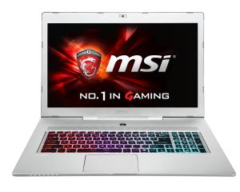

MSI GS series

The history of 17-inch gaming laptops is a never-ending story of embarrassingly thick slabs of plastic and metal, typically done up in garish colors, covered in enough lights for a planetarium show, and designed to appeal to a visual aesthetic somewhere between '90s cyberpunk chic and a dorm room.
No matter that these systems have become steadily more powerful over the years, slowly closing the gap with traditional gaming desktops. For many who enjoy PC gaming but also want a laptop that actually works for everyday tasks without looking ridiculous, solutions have been few and far between.
MSI produces laptop bodies that other boutique PC makers use to build made-to-order systems, and you're likely to see something similar to this model tagged with other brand names. But the version MSI sells, called the GS70 Stealth, is a great example of the new slimmer, more modern-looking gaming laptop we're starting to see more of.
SPECS:
- Windows 10 Home/Windows 10 Pro
- Latest 6th Gen. Intel® Core™ i7 processor
- GeForce® GTX 970M graphics with ultra performance
- 17.3" THIN STEALTH TECHNOLOGY
- 17.3” Full HD (1920x1080)
- True Color Technology for increased color contrast and greater image detail
- Exclusive ESS SABRE HiFi DAC for lossless, high-quality audio
- Nahimic Sound Technology delivering 360° immersive audio experience
- Sound by Dynaudio system
- NVMe M.2 SSD by PCIe Gen3 X4 up to 2200MB/s speed(Optional)
- The latest USB 3.1 SuperSpeed+ interface built in
- Exclusive SHIFT technology boosts performance under controlled noise & temperature
- Exclusive Cooler Boost 3 Technology
- SteelSeries Engine to personalize your own style
- Keyboard by Steelseries with full color backlighting
- Killer DoubleShot Pro (Killer Gb LAN + Killer 802.11 a/c WiFi) with Smart Teaming
- Xsplit Gamcaster free premium license for 1 year
- Matrix Display supporting 4K output up to 3 external monitors
- Stylish brushed aluminum chassis, an idyllic demonstration of beauty